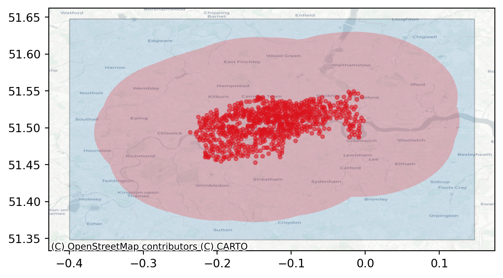
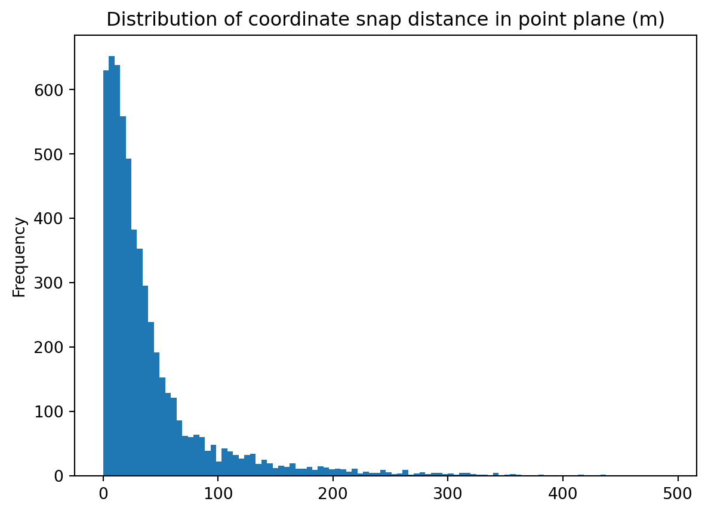

import datetime
import os
import subprocess
import tempfile
from typing import Union
import contextily as ctx
import folium
import geopandas as gpd
from haversine import haversine, Unit
import matplotlib.pyplot as plt
import pandas as pd
import pydeck as pdk
import pyproj
from pyprojroot import here
import r5py
import requests
from sklearn import preprocessing
from shapely.geometry import LineString, Point, PolygonCycling Network Routing with r5py
Tutorial
Transport Modelling
REST API
Web data
Geospatial
Using r5py to analyse service coverage in the London’s Boris Bike network.
Introduction
r5py is a relatively new transport modelling package available on PyPI. It provides convenient wrappers to Conveyal’s r5 Java library, a performant routing engine originating from the ubiquitous Open Trip Planner (OTP). Whereas r5py may not be as feature-rich as OTP, its unique strength is in the production of origin:destination matrices at scale. This is important if the intention is to produce stable statistics based on routing algorithms, where the idiosyncracies of local transport service availability means that departure times can have a significant impact upon overall journey duration.
In summary, r5py achieves stable statistics by calculating travel times over multiple journeys within a time window, returning insightful summaries such as the median duration required to travel from point A to B.
A Note on the Purpose
This tutorial aims to familiarise the reader with r5py and how it integrates with the python geospatial ecosystem of packages. This article is not to be used to attempt to infer service quality outcomes or to inform policy decisions. Limitations of this analysis and suggested improvements will be discussed throughout.
Intended Audience
Experienced python practitioners familiar a robust working knowledge of the typical python GIS stack, eg geopandas, shapely, fiona and folium. Familiarity with r5py and routing operations is not required. Familiarity with coordinate reference systems (CRS) is required.
Outcomes
- Ingest London bike charging station locations.
- Visualise charging stations in an interactive hex map.
- Create a naive point plane of destinations.
- Check that the point plane is large enough to accommodate station locations.
- Calculate origin:destination travel time matrix, by cycling modality and with a maximum journey time of 30 minutes.
- Engineer features to help analyse the cycling network accessibility.
- Visualise the cycling network coverage and the most remote points within that area.
What You’ll Need:
requirements.txt
contextily
geopandas
folium
mapclassify
matplotlib
pydeck
pyprojroot
r5py
requests
scikit-learnGetting Started
It is required to configure a Java Virtual Machine for this tutorial. The transport routing depends on this. Please consult the r5py installation documentation [1] for guidance.
London Cycle Station Service Coverage
Start by loading the required packages.
Ingest the Street Network Data
Firstly, we must acquire information about the transport network. There are a few sources of this, but we shall use the BBBikes website to ingest London-specific open street map extracts. The required data should be in protocolbuffer (.pbf) format.
Exercise 1
Find the appropriate url that points to the london.osm.pbf file. Ingest the data and store at an appropriate location.
Click to expand hint
Either using python requests or subprocess with the curl command, request the url of the pbf file and output the response to a data folder.
Solution
Show the code
osm_pth = here("data/london.osm.pbf")
# tmp = tempfile.TemporaryDirectory()
# subprocess.run(
# [
# "curl",
# "https://download.bbbike.org/osm/bbbike/London/London.osm.pbf",
# "-o",
# os.path.join(tmp.name, "london.osm.pbf"),
# ]
# )
# temp write to file to avoid repeat ingests
if not os.path.exists(osm_pth):
subprocess.run(
[
"curl",
"https://download.bbbike.org/osm/bbbike/London/London.osm.pbf",
"-o",
osm_pth,
]
)Ingest the Bike Charging Station Locations
Exercise 2
To get data about the bike charging stations in London, we will query Transport for London’s BikePoint API.
- Explore the site and find the correct endpoint to query.
- The tutorial requires the following fields: station ID, the human-readable name, latitude and longitude for each available station.
- Store the data in a geopandas geodataframe with the appropriate coordinate reference system.
- Inspect the head of the geodataframe.
Click to expand hint
- Using the resuests package, send a get request to the endpoint.
- Store the required fields in a list: “id”, “commonName”, “lat”, “lon”.
- Check that the response returned HTTP status 200. If True, get the content in JSON format.
- Create an empty list to store the station data.
- Iterate through the content dictionaries. If a key is present within the required fields, store the key and value within a temporary dictionary.
- Append the dictionary of required fields and their values to the list of stations.
- Convert the list of dictionaries to a pandas dataframe. Then convert this to a geopandas geodataframe, using the coordinate reference system “EPSG:4326”. As we have lat and lon in seperate columns, use geopandas
points_from_xy(), ensuring you pass values in the order of longitude, latitude. - Print out the head of the stations gdf.
Solution
Show the code
stations_pth = here("data/stations.pkl")
if not os.path.exists(stations_pth):
ENDPOINT = "https://api.tfl.gov.uk/BikePoint/"
resp = requests.get(ENDPOINT)
if resp.ok:
content = resp.json()
else:
raise requests.exceptions.HTTPError(
f"{resp.status_code}: {resp.reason}"
)
needed_keys = ["id", "commonName", "lat", "lon"]
all_stations = list()
for i in content:
node_dict = dict()
for k, v in i.items():
if k in needed_keys:
node_dict[k] = v
all_stations.append(node_dict)
stations = pd.DataFrame(all_stations)
station_gdf = gpd.GeoDataFrame(
stations,
geometry=gpd.points_from_xy(stations["lon"], stations["lat"]),
crs=4326,
)
station_gdf.to_pickle(stations_pth)
else:
stations = pd.read_pickle(stations_pth)
station_gdf = gpd.GeoDataFrame(stations, crs=4326)
station_gdf.head()| id | commonName | lat | lon | geometry | |
|---|---|---|---|---|---|
| 0 | BikePoints_1 | River Street , Clerkenwell | 51.529163 | -0.109970 | POINT (-0.10997 51.52916) |
| 1 | BikePoints_2 | Phillimore Gardens, Kensington | 51.499606 | -0.197574 | POINT (-0.19757 51.49961) |
| 2 | BikePoints_3 | Christopher Street, Liverpool Street | 51.521283 | -0.084605 | POINT (-0.08460 51.52128) |
| 3 | BikePoints_4 | St. Chad's Street, King's Cross | 51.530059 | -0.120973 | POINT (-0.12097 51.53006) |
| 4 | BikePoints_5 | Sedding Street, Sloane Square | 51.493130 | -0.156876 | POINT (-0.15688 51.49313) |
That’s all the external data needed for this tutorial. Let’s now examine the station locations.
Visualise the Station Density
As the stations are densely located in and around central London, a standard matplotlib point map would suffer from overplotting. A better way is to present some aggregeated statistic on a map, such as density.
Exercise 3
Plot the density of cycle station locations on a map. The solution will use pydeck, but any visualisation library that can handle geospatial data would be fine.
Click to expand hint
- Create a pydeck hexagon layer based on the
station_gdf. The hexagon layer should be configured as below:
- extruded
- position from lon and lat columns
- elevation scale is 100
- elevation range from 0 through 100
- coverage is 1
- radius of hexagons is 250 metres
- Create a pydeck view state object to control the initial position of the camera. Configure this as you see fit.
- (Optional) Add a custom tooltip, clarifying that the hexagon elevation is equal to the count of stations within that area. You may wish to consult the deck.gl documentation to help implement this.
- Create a pydeck deck with the hexagon layer, custom view state, tooltip and a map style of your choosing.
Solution
Show the code
# pydeck visuals - concentration of charging stations by r250m hex
layer = pdk.Layer(
"HexagonLayer",
station_gdf,
pickable=True,
extruded=True,
get_position=["lon", "lat"],
auto_highlight=True,
elevation_scale=100,
elevation_range=[0, 100],
coverage=1,
radius=250, # in metres, default is 1km
colorRange=[
[255, 255, 178, 130],
[254, 217, 118, 130],
[254, 178, 76, 130],
[253, 141, 60, 130],
[240, 59, 32, 130],
[189, 0, 38, 130],
], # optionally added rgba values to allow transparency
)
view_state = pdk.ViewState(
# longitude=-0.140,# value for iframe
longitude=-0.070,# value for code chunk
latitude=51.535,
# zoom=10, # value for iframe
zoom=10.5, # value for code chunk
min_zoom=5,
max_zoom=15,
pitch=40.5,
bearing=-27.36,
)
tooltip = {"html": "<b>n Stations:</b> {elevationValue}"}
r = pdk.Deck(
layers=[layer],
initial_view_state=view_state,
tooltip=tooltip, # prettier than default tooltip
map_style=pdk.map_styles.LIGHT,
)
rGenerate the Destination Locations
We can use the bike stations as journey origins. To compute travel times, we need to generate destination locations. This tutorial uses a simple approach to generating equally spaced points within a user-defined bounding box.
Limitation
Generating a point plane is a fast way to get a travel time matrix. However, this is naive to locations that the riders would prefer to start or finish their journeys. A more robust approach would be to use locations of retail or residential features. The European Commission’s Global Human Settlement Layer [2] data would provide centroids to every populated grid cell down to a 10m2 resolution.
Exercise 4
Write a function called create_point_grid() that will take the following parameters:
bbox_listexpecting a bounding box list in [xmin, ymin, xmax, ymax] format with epsg:4326 longitude & latitude values.stepsizeexpecting a positive integer, specifying the spacing of the grid points in metres.
create_point_grid() should return a geopandas geodataframe of equally spaced point locations - the point grid. The grid point locations should be in epsg:4326 projection. The geodataframe requires a geometry column and an id column equal to the index of the dataframe (required for r5py origin:destination matrix calculation).
Once you are happy with the function, use it to produce an example geodataframe and explore() a folium map of the point grid.
Click to expand hint
Note that epsg:4326 is a geodetic projection, unsuitable for measuring distance between points in the point plane. Ensure that the crs is re-projected to an appropriate planar crs for distance calculation.
- Store the South-West and North-East coordinates as
shapely.geometry.Pointobjects. - Use
pyproj.Transformer.from_crs()to create 2 transformers, one from geodetic to planar, and the other back from planar to geodetic. - Use the transformers to convert the SW and NE points from geodetic to planar.
- Use nested loops to iterate over the area between the corner points. Store the point location as a
shapely.geometry.Pointobject, using a transformer to convert back to epsg:4326. Append the point to a list of grid points. - Increment the x and y values by the provided
stepsizeand continue to append points in this fashion until xmin has reached the xmax value, likewise until ymin has met the ymax value. - Create a pandas dataframe with the geometry column using the appended point locations and an
idcolumn that uses therange()function to generate a unique integer value for each row. - Use the defined function with a sample bounding box and explore the resulting geodataframe with an interactive folium map.
Solution
Show the code
def create_point_grid(bbox_list: list, stepsize: int) -> gpd.GeoDataFrame:
"""Create a metric point plane for a given bounding box.
Return a geodataframe of evenly spaced points for a specified bounding box.
Distance between points is controlled by stepsize in metres. As
an intermediate step requires transformation to epsg:27700, the calculation
of points is suitable for GB only.
Parameters
----------
bbox_list : list
A list in xmin, ymin, xmax, ymax order. Expected to be in epsg:4326.
Use https://boundingbox.klokantech.com/ or similar to export a bbox.
stepsize : int
Spacing of grid points in metres. Must be larger than zero.
Returns
-------
gpd.GeoDataFrame
GeoDataFrame in epsg:4326 of the point locations.
Raises
------
TypeError
bbox_list is not type list.
Coordinates in bbox_list are not type float.
step_size is not type int.
ValueError
bbox_list is not length 4.
xmin is greater than or equal to xmax.
ymin is greater than or equal to ymax.
step_size is not a positive integer.
"""
# defensive checks
if not isinstance(bbox_list, list):
raise TypeError(f"bbox_list expects a list. Found {type(bbox_list)}")
if not len(bbox_list) == 4:
raise ValueError(f"bbox_list expects 4 values. Found {len(bbox_list)}")
for coord in bbox_list:
if not isinstance(coord, float):
raise TypeError(
f"Coords must be float. Found {coord}: {type(coord)}"
)
# check points are ordered correctly
xmin, ymin, xmax, ymax = bbox_list
if xmin >= xmax:
raise ValueError(
"bbox_list value at pos 0 should be smaller than value at pos 2."
)
if ymin >= ymax:
raise ValueError(
"bbox_list value at pos 1 should be smaller than value at pos 3."
)
if not isinstance(stepsize, int):
raise TypeError(f"stepsize expects int. Found {type(stepsize)}")
if stepsize <= 0:
raise ValueError("stepsize must be a positive integer.")
# Set up crs transformers. Need a planar crs for work in metres - use BNG
planar_transformer = pyproj.Transformer.from_crs(4326, 27700)
geodetic_transformer = pyproj.Transformer.from_crs(27700, 4326)
# bbox corners
sw = Point((xmin, ymin))
ne = Point((xmax, ymax))
# Project corners to planar
planar_sw = planar_transformer.transform(sw.x, sw.y)
planar_ne = planar_transformer.transform(ne.x, ne.y)
# Iterate over metric plane
points = []
x = planar_sw[0]
while x < planar_ne[0]:
y = planar_sw[1]
while y < planar_ne[1]:
p = Point(geodetic_transformer.transform(x, y))
points.append(p)
y += stepsize
x += stepsize
df = pd.DataFrame({"geometry": points, "id": range(0, len(points))})
gdf = gpd.GeoDataFrame(df, crs=4326)
return gdf
create_point_grid(
bbox_list=[-0.5917,51.2086,0.367,51.7575], stepsize=5000).explore(min_zoom=9)Make this Notebook Trusted to load map: File -> Trust Notebook
Check the Study Area Size
Before we go ahead with the transport modelling, it is important to check that the point plane is large enough to contain a 30 minute journey from any of the stations. 30 minutes is the current charging interval for the pay as you ride options [3]. Note that making the point plane larger means more origin:destination travel times to calculate, so there is a compromise to be met. Using too small a grid will introduce edge effects [4] and therefore limit the validity of the study.
Exercise 5
Part 1
- Create a point plane with a bounding box of your choosing. Use a stepsize of 1000 metres.
- Get the boundary polygon of this point plane. This is the study area.
- Buffer the bike station locations. This buffered area should represent the reachable area from within a 30 minute ride of any station and a presumed average urban cycle speed of 18 kilometres per hour (an opinionated speed based on a sample of one overweight, middle-aged man’s Strava data). Save the geometry as a Polygon object.
- Check that the study area completely contains the buffered stations.
Part 2
Create a diagnostic plot displaying the station locations, buffered station polygon and study area polgon together on one map.
Click to expand hint
Part 1
- Create a point plane of your choosing. Use the
total_boundsattribute to extract values for minx, miny, maxx, maxy. - Use
shapely.geometry.Polygonto convert the 4 values above into a rectangular bounding box. - Re-project the stations geodataframe to a planar crs. Buffer this geodataframe by an appropriate value in metres, convert back to epsg:4326 and store the unary union.
- Check that the study area polygon completely contains the buffered station polygon by using an appropriately named GeoDataFrame method.
Part 2
- Plot the stations gdf using marker values “o”, an alpha of 0.5, markersize of 10 and red color. Store in a variable called
ax. - Plot the study area boundary polygon, ensuring the
axvalue from the previous step is used. Use an alpha of 0.2. - Add a plot of the buffered stations to the same axes, ensuring a color “red” and an alpha of 0.2.
- Use contextily to add a basemap to the axes, selecting an appropriate crs value and tile provider.
- Use matplotlib.pyplot to show the plot.
Solution
Part 1
Show the code
point_plane = create_point_grid(
[-0.4, 51.35, 0.15, 51.65], stepsize=1000
)
# Get a boundary polygon for the study area
minx, miny, maxx, maxy = point_plane.total_bounds
bbox_polygon = gpd.GeoSeries(
[Polygon([(minx, miny), (minx, maxy), (maxx, maxy), (maxx, miny)])]
)
# buffer the stations by presumed urban cycle speed of 18 kph
station_buffer = gpd.GeoSeries(
Polygon(
station_gdf.to_crs(27700).buffer(9000).to_crs(4326).geometry.unary_union
)
)
cond = bbox_polygon.contains(station_buffer)[0]
print(
f"Point grid contains buffered stations? {cond}")Point grid contains buffered stations? TruePart 2
Show the code
ax = station_gdf.plot(marker="o", color="red", alpha=0.5, markersize=10)
# plot the bounding box of the point plane boundary in blue
bbox_polygon.plot(ax=ax, alpha=0.2, edgecolor="black")
# plot the buffered potential travel region around the stations
# in light red
station_buffer.plot(ax=ax, alpha=0.2, color="red")
ctx.add_basemap(
ax, crs=station_gdf.crs.to_string(), source=ctx.providers.CartoDB.Positron
)
plt.show()
With a study area adequately encompassing the proposed reachable area, proceed to the transport routing.
Can the Transport Network reach the Point Plane?
As we have created a point plane naive to the transport network, it is important to check that the points are reachable by bike. Any point falling within an inaccesible portion of the transport network will report a null travel time. r5py comes with a utility function that helps to ‘snap’ unreachable locations to the nearest feature of the travel network.
Exercise 6
Part 1
Using the r5py quickstart documentation, instantiate a transport_network object, passing osm_pth as its single argument.
Part 2
- Now using the r5py advanced use section, create a new column in the
point_planegdf calledsnapped_geometry. - Use the correct method of the
transport_networkto adjust the existing geometry column. - Use a maximum search radius of 500 metres and specify the bicycle modality. Inspect the resulting geodataframe.
Part 3
Now that we have a point plane with a routable geography, we can check to ensure that the maximum search radius was observed. 1. Calculate the haversine distance in metres between the original geometry and the snapped_geometry coordinates. 2. Assign the result to point_plane["snap_dist_m"]. 3. Inspect the distribution of the snap_dist_m column. Confirm that there are no values above the maximum search radius value.
Click to expand hint
Part 1
- r5py is imported as r5py. You can inspect the available classes by using the
dir()function.
Part 2
- Use
dir()on thetransport_networkobject instantiated in part 1 to find the appropriate method for snapping the coordinates to the nearest network feature. - Specify the
radiusargument with an appropriate value. - For the
street_modeargument, select the appropriate r5py transport mode. To find this value, usedir(r5py.TransportMode).
Part 3
- the
haversinefunction is imported. Unfortunately, it expects coordinates to be in a latitude, longitude order. - Apply a
lambdafunction across every row in thepoint_planeGeoDataFrame. You will need to specifyaxis=1to achieve this. - Within the lambda function, calculate the haversine distance in metres between the original coordinates and the
snapped_geometrycoordinates. Assign the output to the correctly named column. - Inspect the distribution of the haversine distances in whichever way you feel. Can you confirm that no coordinate was adjusted beyond the maximum search radius used when you instantiated the
snapped_geometrycolumn?
Solution
Part 1
Show the code
transport_network = r5py.TransportNetwork(osm_pth)Part 2
Show the code
point_plane["snapped_geometry"] = transport_network.snap_to_network(
point_plane["geometry"],
radius=500,
street_mode=r5py.TransportMode.BICYCLE,
)
point_plane.head()| geometry | id | snapped_geometry | |
|---|---|---|---|
| 0 | POINT (-0.40000 51.35000) | 0 | POINT (-0.40010 51.34960) |
| 1 | POINT (-0.39463 51.34995) | 1 | POINT (-0.39420 51.34960) |
| 2 | POINT (-0.38926 51.34990) | 2 | POINT (-0.38927 51.35027) |
| 3 | POINT (-0.38390 51.34985) | 3 | POINT (-0.38468 51.35024) |
| 4 | POINT (-0.37853 51.34980) | 4 | POINT (-0.37851 51.34984) |
Part 3
Show the code
# reverse the lonlat to latlon
point_plane["snap_dist_m"] = point_plane.apply(
lambda row:haversine(
(row["geometry"].y, row["geometry"].x),
(row["snapped_geometry"].y, row["snapped_geometry"].x),
unit=Unit.METERS), axis=1)
point_plane["snap_dist_m"].plot.hist(
bins=100,
title="Distribution of coordinate snap distance in point plane (m)"
)
Here we can confirm that the distribution of the haversine distances is strongly right-skewed. There appear to be no values greater than 450 metres.
point_plane["snap_dist_m"].describe()count 5871.000000
mean 42.845357
std 56.686695
min 0.013986
25% 11.201837
50% 24.091469
75% 48.400520
max 491.635701
Name: snap_dist_m, dtype: float64In describing the column we can observe the actual maximum haversine distance of 492 metres. Note the differences in the mean and median are attributable to the strong skew in the distance distribution.
Visualise
point_plane["lines"] = point_plane.apply(
lambda row: LineString([row["geometry"], row["snapped_geometry"]]),
axis=1
)# retrieve the top 100 rows where coordinates where adjusted by the greatest distance.
largest_snaps = point_plane.sort_values(by="snap_dist_m", ascending=False).head(100)
# plot these on a folium map. Add a marker layer with red icons showing the locations of the original point plane geometry.
z_start = 9
overview_map = largest_snaps.explore(
marker_type="marker",
marker_kwds={
"icon": folium.map.Icon(color="red", icon="ban", prefix="fa"),
},
map_kwds={
"center": {"lat": 51.550, "lng": -0.070}
},
zoom_start=z_start,
)
# now add another layer to the same folium map, adding the snapped geometry with a green marker.
overview_map = largest_snaps.set_geometry("snapped_geometry").explore(
m=overview_map,
marker_type="marker",
marker_kwds={
"icon": folium.map.Icon(color="green", icon="bicycle", prefix="fa"),
}
)
# add the third and final layer to the map - the lines connecting the geometries to their snapped equivalents.
overview_map = largest_snaps.set_geometry("lines").explore(
m=overview_map,
zoom_start=z_start
)
# show the map
overview_mapMake this Notebook Trusted to load map: File -> Trust Notebook
Calculate the Travel Time Matrix
Now that we have everything we need to carry out the transport routing, we can clean up our environment and make one final adjustment to the point plane - ensure the snapped geometries are set as the geometry column. You can remove the snapped distance and original geometry column.
del overview_map, largest_snaps, z_startpoint_plane.drop(columns=["geometry", "lines", "snap_dist_m"], axis=1, inplace=True)
point_plane.rename(columns={"snapped_geometry": "geometry"}, inplace=True)
point_plane.set_geometry("geometry", inplace=True)
point_plane| id | geometry | |
|---|---|---|
| 0 | 0 | POINT (-0.40010 51.34960) |
| 1 | 1 | POINT (-0.39420 51.34960) |
| 2 | 2 | POINT (-0.38927 51.35027) |
| 3 | 3 | POINT (-0.38468 51.35024) |
| 4 | 4 | POINT (-0.37851 51.34984) |
| ... | ... | ... |
| 5866 | 5866 | POINT (0.12756 51.64574) |
| 5867 | 5867 | POINT (0.13101 51.64591) |
| 5868 | 5868 | POINT (0.13696 51.64601) |
| 5869 | 5869 | POINT (0.14071 51.64585) |
| 5870 | 5870 | POINT (0.14529 51.64795) |
5871 rows × 2 columns
Compute the travel times from the station locations to the adjusted point plane. Use a sensible departure datetime and ensure bicycle modality is used for the transport mode. Finally, limit the maximum jourey time to 30 minutes. This step can be quite expensive, depending on the size of your point plane.
travel_time_matrix = r5py.TravelTimeMatrixComputer(
transport_network,
origins=station_gdf,
destinations=point_plane,
transport_modes=[r5py.TransportMode.BICYCLE],
departure=datetime.datetime(2023, 1, 22, 8, 0, 0), # 8am on a Monday
departure_time_window=datetime.timedelta(minutes=10), # depart every 10 minutes
snap_to_network=False,
# doesn't work for all points, TODO: snap to nearest vertex in road
# network where auto snapping failed. TODO: Report haversine distance
# to snapped location.
max_time=datetime.timedelta(minutes=30), # journeys <= 30 mins
).compute_travel_times()
travel_time_matrix| from_id | to_id | travel_time | |
|---|---|---|---|
| 0 | BikePoints_1 | 0 | NaN |
| 1 | BikePoints_1 | 1 | NaN |
| 2 | BikePoints_1 | 2 | NaN |
| 3 | BikePoints_1 | 3 | NaN |
| 4 | BikePoints_1 | 4 | NaN |
| ... | ... | ... | ... |
| 4679182 | BikePoints_184 | 5866 | NaN |
| 4679183 | BikePoints_184 | 5867 | NaN |
| 4679184 | BikePoints_184 | 5868 | NaN |
| 4679185 | BikePoints_184 | 5869 | NaN |
| 4679186 | BikePoints_184 | 5870 | NaN |
4679187 rows × 3 columns
Don’t be put off by NaN in the travel_time column. These are point in the point plane that were not reachable from any bike station.
Feature Engineering
Next we will need to calculate some informative features:
- The median travel time for every point in the point plane.
- The number of bike stations that can reach each point in the point plane. Ensure that this column is formatted as “int16”.
- A column that returns a list of the point plane geometry for each row, in
[long, lat]order. This is the format that pydeck expects. - The minmax scaled number of stations serving each point in the point plane.
- The inverted median travel time as a decimal.
def get_median_tts_for_all_stations(
tt_matrix: pd.DataFrame, pp: gpd.GeoDataFrame
) -> gpd.GeoDataFrame:
"""Join travel times & medians to point geometries.
Station locations are presumed to be origins. Points in the point plane are
presumed to be destinations. Station geometry is dropped.
Parameters
----------
tt_matrix : pd.DataFrame
Matrix of travel times where `from_id` are stations and `to_id` are
points in the point plane.
pp : gpd.GeoDataFrame
Locations in the point plane.
Returns
-------
gpd.GeoDataFrame
Point plane locations with median travel times from stations and number of stations serving each point. A number of features are added to assist in mapping.
"""
# TODO: Defensive checks & Unit tests
# get median travel time from all stations:
med_tts = tt_matrix.groupby("to_id")["travel_time"].median()
# get number of stations serving each point in the grid
tt_dropna = tt_matrix.dropna()
n_stations = tt_dropna.groupby("to_id")["from_id"].count()
df = pp.join(med_tts).join(n_stations)
df = df.rename(
columns={"travel_time": "median_tt", "from_id": "n_stations_serving"}
)
# need integer for n_stations_serving but there are NaNs
bool_ind = df["n_stations_serving"].isna()
df.loc[bool_ind, "n_stations_serving"] = 0.0
df["n_stations_serving"] = df["n_stations_serving"].astype("int16")
# feature engineering for pydeck
x = df["n_stations_serving"].values.reshape(-1, 1)
min_max_scaler = preprocessing.MinMaxScaler()
x_scaled = min_max_scaler.fit_transform(x)
df["n_stations_norm"] = pd.Series(x_scaled.flatten())
out_gdf = gpd.GeoDataFrame(df, crs=4326)
out_gdf["listed_geom"] = [[c.x, c.y] for c in out_gdf["geometry"]]
out_gdf["inverted_med_tt"] = (
max(out_gdf["median_tt"].dropna()) - out_gdf["median_tt"]
) * 0.1
return out_gdfmed_tts = get_median_tts_for_all_stations(
tt_matrix=travel_time_matrix, pp=point_plane
)
med_tts.dropna()| id | geometry | median_tt | n_stations_serving | n_stations_norm | listed_geom | inverted_med_tt | |
|---|---|---|---|---|---|---|---|
| 1386 | 1386 | POINT (-0.14795 51.41766) | 30.0 | 1 | 0.002667 | [-0.1479481, 51.4176588] | 0.20 |
| 1388 | 1388 | POINT (-0.13660 51.41752) | 29.0 | 1 | 0.002667 | [-0.1366036, 51.4175184] | 0.30 |
| 1469 | 1469 | POINT (-0.25464 51.42343) | 31.0 | 1 | 0.002667 | [-0.2546385, 51.4234283] | 0.10 |
| 1470 | 1470 | POINT (-0.25322 51.42198) | 32.0 | 2 | 0.005333 | [-0.2532204, 51.4219807] | 0.00 |
| 1472 | 1472 | POINT (-0.23869 51.42585) | 27.5 | 2 | 0.005333 | [-0.2386902, 51.4258517] | 0.45 |
| ... | ... | ... | ... | ... | ... | ... | ... |
| 4603 | 4603 | POINT (-0.01862 51.58216) | 28.0 | 4 | 0.010667 | [-0.0186162, 51.5821596] | 0.40 |
| 4604 | 4604 | POINT (-0.01343 51.58206) | 28.0 | 3 | 0.008000 | [-0.0134299, 51.5820631] | 0.40 |
| 4605 | 4605 | POINT (-0.00819 51.58207) | 28.5 | 2 | 0.005333 | [-0.0081859, 51.5820693] | 0.35 |
| 4606 | 4606 | POINT (-0.00238 51.58224) | 29.0 | 3 | 0.008000 | [-0.0023776, 51.5822379] | 0.30 |
| 4607 | 4607 | POINT (0.00242 51.58226) | 29.0 | 1 | 0.002667 | [0.0024175, 51.5822598] | 0.30 |
1481 rows × 7 columns
As this final GeoDataFrame is all that is required for the remaining tutorial, go ahead and tidy up the environment.
# Tidy up
# tmp.cleanup()
del station_gdf, travel_time_matrix, point_planeVisualise travel times.
def make_scatter_deck(
gdf: gpd.GeoDataFrame, radius="(n_stations_norm * 25) + 20", start_lon: float=-0.005, start_lat: float=51.518, start_zoom: Union[int, float]=10,
) -> pdk.Deck:
"""Render a scatterPlotLayer of travel time & number of stations serving.
Intended for use with output of ./src/tt-london-bikes.py ->
./data/interim/median_travel_times.pkl.
Parameters
----------
gdf : gpd.GeoDataFrame
Table of grid locations and travel time from station locations.
radius : str, optional
A valid pydeck get_radius expression, by default
"(n_stations_norm * 25) + 20"
start_lon: float, optional
The starting view longitude, by default -0.110.
start_lat: float, optional
The starting view latitude, by default 51.518.
start_zoom: Union[int, float], optional
The starting view zoom, by default 10.
Returns
-------
pdk.Deck
A rendered interactive map.
"""
# some basic defensive checks
if not isinstance(gdf, gpd.GeoDataFrame):
raise TypeError(f"gdf expected gpd.GeoDataFrame, found {type(gdf)}")
expected_cols = [
"n_stations_serving",
"listed_geom",
"inverted_med_tt",
"median_tt",
]
coldiff = sorted(list(set(expected_cols).difference(gdf.columns)))
if coldiff:
raise AttributeError(f"Required column names are absent: {coldiff}")
gdf = gdf.rename(columns={"n_stations_serving": "n_stats"})
# create deck layers
layer = pdk.Layer(
"ScatterplotLayer",
gdf,
pickable=True,
opacity=0.2,
stroked=True,
filled=True,
radius_scale=6,
radius_min_pixels=1,
radius_max_pixels=100,
line_width_min_pixels=1,
get_position="listed_geom",
get_radius=radius,
get_fill_color="[255,(inverted_med_tt * 255), (median_tt * 255)]",
get_line_color="[0,0,0,0]",
)
# Set the viewport location
view_state = pdk.ViewState(
longitude=start_lon,
latitude=start_lat,
zoom=start_zoom,
min_zoom=5,
max_zoom=15,
pitch=40.5,
bearing=-27.36,
)
tooltip = {
"text": "Stations serving: {n_stats}\nMdn travel time: {median_tt}"
}
# Render
r = pdk.Deck(
layers=[layer], initial_view_state=view_state, tooltip=tooltip
)
return rVisualise the travel time from stations to the point plane. Map size of the points to the normalized number of stations serving each point multipled by 25 (too large a number here causes significant overplotting). Colour should be mapped to median travel time. As the r,g,b,a values can be controlled seperately, feel free to experiment with combinations using median_tt and inverted_med_tt.
r = make_scatter_deck(med_tts)
rLastly, we can identify those points within the thirty minute reachable area from the bike station network that are the most remote. Let’s visualise the 20 most remote locations. These would represent candidate locations for increasing the coverage of the boris bike network within the thirty minute reachable zone. Once more, please note that the point grid is naive to locations where people live or would like to travel to and from.
n_isolated = (
med_tts.dropna()
.sort_values(["median_tt", "n_stations_serving"], ascending=[False, False])
.head(20)
)
r = make_scatter_deck(n_isolated, radius=50, start_zoom=9.5)
rTips
- The packages used in this tutorial expect the sequence of coordinates to be long, lat. If you select an alternative method for mapping visuals, remember to check that this is consistent. If you are getting empty interactive map visuals, pan out and check that an incorrect coordinate specification has resulted in your points being rendered off the East coast of Africa.
Conclusion
Exercise Example
Some txt
Click to expand hint
Some hint
Solution
Show the code
# Some solutionfin!
References
[1]
“r5py Installation documentation.” {https://r5py.readthedocs.io/en/stable/user-guide/installation/installation.html}
[2]
“EC Global Human Settlement Layer.” {https://ghsl.jrc.ec.europa.eu/download.php}
[3]
“Santander Cycles - What you pay.” {https://tfl.gov.uk/modes/cycling/santander-cycles/what-you-pay}
[4]
I. Yamada, “Edge Effects,” International Encyclopedia of Human Geography, pp. 381–388, 2009.